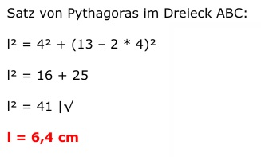
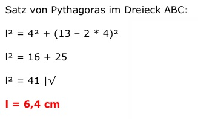

Flächenberechnung Aufgabe 96
Ein Rechteck ist 4 cm breit und 13 cm lang.
Es soll so zerteilt werden, dass zwei Trapeze entstehen,
deren Grundseiten 4 cm und 9 cm lang sind.
Wie lang ist die Schnittlinie?
 

Flächenberechnung Aufgabe 96 Ein Rechteck ist 4 cm breit und 13 cm lang. Es soll so zerteilt werden, dass zwei Trapeze entstehen, deren Grundseiten 4 cm und 9 cm lang sind. Wie lang ist die Schnittlinie?